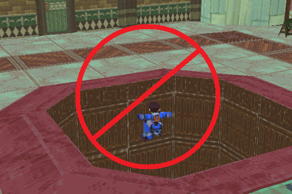

Critical Analysis: Nino Ruins and Crappy Level Design

It's a nice chill evening and I'm sitting here enjoying a playthrough of Megaman Legends 2. I clear the Parabola defense mission, the ruins
are opened, and...I feel like turning the game off now. What is it exactly about Nino ruins that makes me dread playing through it?
The main reason for this is the level design that Nino Ruins utilizes. What sets Nino apart from other ruins (in both games) is that it's
not only linear, but lengthy and reptitive. Nino Ruins consists of five floors, three of which need to be explored both submerged and dry to
collect everything. To make matters worse Data only appears at the very end of the ruin, essentially giving the player the message that they
have to loot the entire place in one sitting. That's asking a lot. What also makes Nino painstaking is the fact that there's only one "right"
weapon to clear it with: the Drill Arm. Sure you can go through it with any other weapon and be fine, but that only means that a return trip
is in order if you plan to collect everything. Of course, the underwater slowdown is a factor, but that's more of a PSX issue than a design
flaw.
Now let's compare this to say, Manda Island's ruins. What I like about Manda is that the ruin is cut up into segments. Once you go through
the initial route that opens the red door and the first Bola fight, you're given the option of a breather to save or change weapons. You get
a similar break after the red route and the second Bola fight. At that point you have the option to head up to the top floor and finish if
need be. Saul Kada employs a similar strategy where you go after the bottom floor first and deal with the Bonnes later. They even had the
courtesy to place Data in front of Wojigairon's room! Calinca has the barrier keys which allow you to shortcut your way to the lower floor
once you get far enough.
At this point you may be wondering, "What about the MML1 ruins? Those were very straightforward!". While Cardon, Lake Jyun, and Clozer
Woods' ruins were built around the concept of doing it all at once, it's worth noting that they're considerably shorter than Nino Ruins,
and the design of the levels is flexible that you can bring whatever weapon you want without feeling like you need to backtrack (with the
rare exception of Clozer Woods' dirt wall). MML1's ruins are also interconnected, driving home the theme of scope that you feel when you
finally obtain the Drill Arm later on. Despite all the digging you do in MML1, it feels more like raw exploration than the repetition you
start to feel with Nino (even more so when you have to backtrack after the first Klaymoor fight).
Don't get me wrong, Nino Ruins has plenty of good points, especially in the area of aesthetics. Reaverbots having different
attacks/properties underwater was nice to see, the room with the giant reaverbot on the fourth floor is one of the most beautiful
things I've seen in a Megaman game, and the music really drove home the atmosphere. In the area of level design though, I just felt
that this particular segment of MML2 hasn't aged quite well.
As always, your comments are welcomed and appreciated!

 ~AquaTeamV3/Buster Cannon
~AquaTeamV3/Buster Cannon